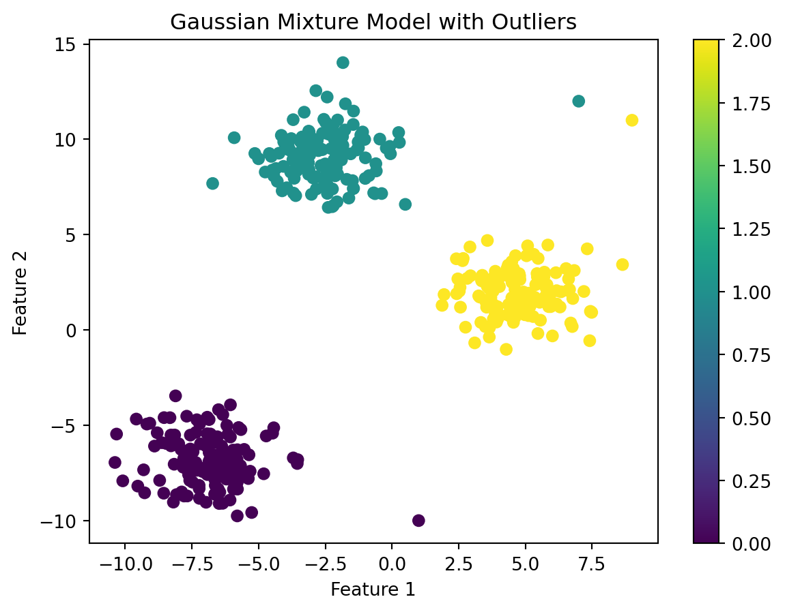
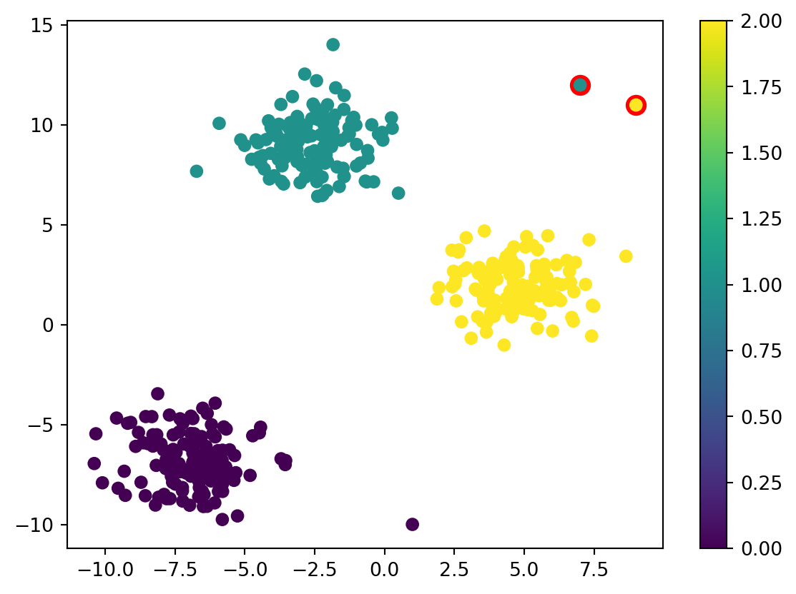
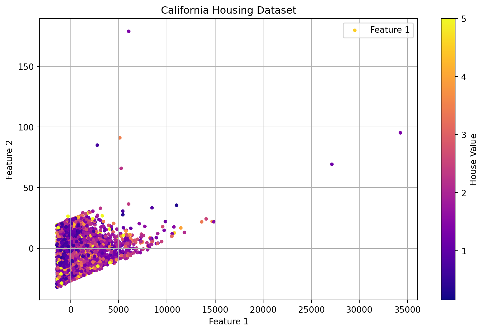
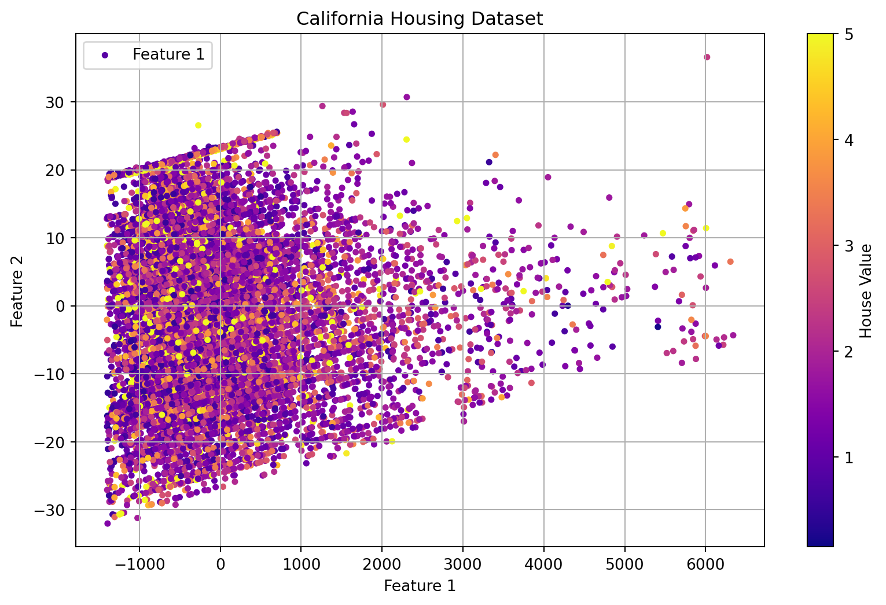

This blog demonstrates anomaly and outlier detection.
Outlier detection
code
Author
Jonathan West
Published
November 25, 2023
Introduction
Anomaly detection is the process of identifying data points that are notably different from the rest of the data. Observations can be skewed due to erroneous data collection, a change in system behavior, or simply an unusual yet natural event. Anomalies/outliers can be applied to applications such as fraud detection or discovering defects in manufactured products. Additionally, it is worth taking note of outlier detection because it can be important to remove outliers from data as a preprocessing step, for a subsequent machine learning algorithm to perform well.
First, we are going to work with a “toy” dataset, by generating data from the scikit learn make_blobs function.
import numpy as npimport matplotlib.pyplot as pltfrom sklearn.datasets import make_blobsfrom sklearn.mixture import GaussianMixture# Set seed for reproducibilitynp.random.seed(42)# Create a dataset with clusters, and add some arbitrary values as outliersX, y = make_blobs(n_samples=400, centers=3, cluster_std=1.3, random_state=42)outliers = np.array([[7, 12], [1, -10], [9, 11]])X = np.vstack((X, outliers))X.shape
(403, 2)
The make_blobs function lets us generate Gaussiang blobs for clustering. We generated 400 samples, with three centers and a standard deviation of 1.3. We also added three arbitrarily chosen outlier points to the dataset, to practice anomaly detection. Next, let’s fit a gaussian mixture model to the data, and plot the results.
Gaussian Mixture Model
# Fit a Gaussian Mixture Modelgmm = GaussianMixture(n_components=3, random_state=42)gmm.fit(X)# Predict the labels and probabilitieslabels = gmm.predict(X)probs = gmm.predict_proba(X)# Plot the data points, color-coded by clusterplt.scatter(X[:, 0], X[:, 1], c=labels, cmap='viridis')plt.colorbar()plt.title("Gaussian Mixture Model with Outliers")plt.xlabel("Feature 1")plt.ylabel("Feature 2")plt.show()

It is fairly easy to visually identify the three outlier points that we added to the dataset. However, in a multi-dimensional dataset, it is not as easy to identify outliers, and in either case mathematical methods are needed to identify outliers and justify the classification. Let’s identify the outliers in our generated data.
Identifying Outliers with Gaussian Mixture Models
Gaussian mixture models essentially work by fitting a number of gaussian distributions to the data, and then using the probabilities of each point belonging to each distribution to classify the points. It is important to note that each observation in the data is therefore assigned a probability of belonging to each distribution. By finding which observations have the lowest probability of belonging to any distribution, we can identify the outliers in the data.
# Set a threshold for outlier identificationthreshold =0.999# Find outliers based on the maximum probability of any distribution being below our cutoffoutlier_indices = np.where(np.max(probs, axis=1) < threshold)# Plot the outliersplt.scatter(X[outlier_indices, 0], X[outlier_indices, 1], marker='o', color='r', s=100, label='Outliers')# Replot the rest of the dataplt.scatter(X[:, 0], X[:, 1], c=labels, cmap='viridis')plt.colorbar()
<matplotlib.colorbar.Colorbar at 0x7f38758819d0>

We can see that two of the three outlier points we added are identified as outliers, and the third is not. Additionally, the threshold was set quite high to consider the two points as outliers, and in many cases we would likely not consider them as anomalies in real data. Let’s take a look at the lowest probability points in the data.
# Find 10 data points with lowest probabilitieslowest_prob_indices = np.argsort(np.max(probs, axis=1))[:10]for i, idx inenumerate(lowest_prob_indices):print(f"{i+1}th lowest probability, idx {idx}; prob {np.max(probs[idx]):.4f}; point {X[idx]}")
We can see that the two outlier points we added are the two points with the lowest probabilities of belonging to any distribution, yet the third attempted outlier was not in the lowest 10 probabilities. This may be because the third data point is closer to the overall center of the data, and therefore has a higher probability of belonging to one of the distributions, despite not being particularly close to any of the cluster centers. Additionally, this highlights the importance of choosing an appropriate threshold and outlier for anomaly detection.
One Class SVM
A single class support vector machine (SVM) is a supervised learning algorithm that is used to identify outliers in data. As the name implies, it is a type of SVM that is designed to learn a particular boundary around a set of data, and then identify points that are outside of that boundary. In other words, it finds a hyperplane in a high dimensional space that separates the majority of the data from potential outliers.
Let’s work with a more realistic dataset to practice this technique. We will be examining the California housing dataset from scikit learn to explore the concept of anomaly and outlier detection.
Load and summarize the data
import matplotlib.pyplot as pltimport pandas as pdfrom sklearn.datasets import fetch_california_housing# Load the California housing datasethousing_data = fetch_california_housing()hd = pd.DataFrame(housing_data.data, columns=housing_data.feature_names)hd['target'] = housing_data.targethd.head()
MedInc
HouseAge
AveRooms
AveBedrms
Population
AveOccup
Latitude
Longitude
target
0
8.3252
41.0
6.984127
1.023810
322.0
2.555556
37.88
-122.23
4.526
1
8.3014
21.0
6.238137
0.971880
2401.0
2.109842
37.86
-122.22
3.585
2
7.2574
52.0
8.288136
1.073446
496.0
2.802260
37.85
-122.24
3.521
3
5.6431
52.0
5.817352
1.073059
558.0
2.547945
37.85
-122.25
3.413
4
3.8462
52.0
6.281853
1.081081
565.0
2.181467
37.85
-122.25
3.422
As we have seen in a previous blog, this dataset contains housing data from California with the target variable being the median house value in hundreds of thousands of dollars. There are eight features in this dataset.
We can visualize the data by using PCA for dimensionality reduction, and then plotting the first two principal components.
from sklearn.decomposition import PCA# Fit PCA to the datapca = PCA(n_components=2)pca.fit(housing_data.data)# Transform the dataX_pca = pca.transform(housing_data.data)# Plot the dataplt.figure(figsize=(10, 6))plt.scatter(X_pca[:, 0], X_pca[:, 1], s=10, c=housing_data.target[:], cmap='plasma', marker='o', label='Feature 1')plt.xlabel('Feature 1')plt.ylabel('Feature 2')plt.title('California Housing Dataset')plt.legend()plt.grid(True)col_bar = plt.colorbar()col_bar.set_label('House Value')plt.show()

We can see that there are some data points that definitely stand out from the rest of the data, based on principal component analysis. Let’s get an evaluation of how well a linear regression model performs on this data, and then we will remove the outliers and see how the model performs.
from sklearn.model_selection import train_test_splitfrom sklearn.linear_model import LinearRegressionfrom sklearn.metrics import mean_absolute_error# split into input and output elementsX = housing_data.datay = housing_data.target# split into train and test setsX_train, X_test, y_train, y_test = train_test_split(X, y, test_size=0.33, random_state=1)# fit the modelmodel = LinearRegression()model.fit(X_train, y_train)# evaluate the modelyhat = model.predict(X_test)# evaluate predictionsmae = mean_absolute_error(y_test, yhat)print('MAE: %.3f'% mae)
MAE: 0.534
Now we will use a one class SVM to identify the outliers.
# evaluate model performance with outliers removed using one class SVMfrom pandas import read_csvfrom sklearn.model_selection import train_test_splitfrom sklearn.linear_model import LinearRegressionfrom sklearn.svm import OneClassSVMfrom sklearn.metrics import mean_absolute_error# split into train and test setsX_train, X_test, y_train, y_test = train_test_split(X, y, test_size=0.33, random_state=1)# identify outliers in the training datasetee = OneClassSVM(nu=0.01)yhat = ee.fit_predict(X_train)# select all rows that are not outliersmask = yhat !=-1print("Pre-outlier removal data shape:", X_train.shape, y_train.shape) # Shape of data before removing outliersX_train, y_train = X_train[mask, :], y_train[mask]print("Post-outlier removal data shape:", X_train.shape, y_train.shape) # Shape of data after removing outliers# fit the modelmodel = LinearRegression()model.fit(X_train, y_train)# evaluate the modelyhat = model.predict(X_test)# evaluate predictionsmae = mean_absolute_error(y_test, yhat)print('MAE: %.3f'% mae)
Pre-outlier removal data shape: (13828, 8) (13828,)
Post-outlier removal data shape: (13685, 8) (13685,)
MAE: 0.505
It appears that a significant number of outliers were removed from the data. We can see that the mean absolute error of the model is reduced by removing the outliers from the data, however not by much in this case. Finally, we will make a plot of the data with the outliers removed.
from sklearn.decomposition import PCA# Fit PCA to the datapca = PCA(n_components=2)pca.fit(housing_data.data)# Transform the dataX_pca = pca.transform(X_train)# Plot the dataplt.figure(figsize=(10, 6))plt.scatter(X_pca[:, 0], X_pca[:, 1], s=10, c=y_train[:], cmap='plasma', marker='o', label='Feature 1')plt.xlabel('Feature 1')plt.ylabel('Feature 2')plt.title('California Housing Dataset')plt.legend()plt.grid(True)col_bar = plt.colorbar()col_bar.set_label('House Value')plt.show()

It is evident that with outliers removed, the data is much more tightly clustered, and this visualization allows us to view the data more clearly.
Conclusion
In this blog, we jumped into the concept of anomaly and outlier detection. There are a variety of different techniques that can be used to identify outliers in data, and the choice of technique depends on the type of data and the application. In this case, we practiced the use of Gaussian mixture models and one class SVMs to identify outliers in data. If you are looking to further your knowledge on this subject, consider applying these techniques to a dataset of your choice, or exploring other techniques such as isolation forests or local outlier factor.
---title: "Anomaly/Outlier Detection"author: "Jonathan West"date: "2023-11-25"categories: ["Outlier detection", code]description: "This blog demonstrates anomaly and outlier detection."format: html: code-tools: true---## IntroductionAnomaly detection is the process of identifying data points that are notably different from the rest of the data. Observations can be skewed due to erroneous data collection, a change in system behavior, or simply an unusual yet natural event. Anomalies/outliers can be applied to applications such as fraud detection or discovering defects in manufactured products. Additionally, it is worth taking note of outlier detection because it can be important to remove outliers from data as a preprocessing step, for a subsequent machine learning algorithm to perform well.First, we are going to work with a "toy" dataset, by generating data from the scikit learn make_blobs function.```{python}import numpy as npimport matplotlib.pyplot as pltfrom sklearn.datasets import make_blobsfrom sklearn.mixture import GaussianMixture# Set seed for reproducibilitynp.random.seed(42)# Create a dataset with clusters, and add some arbitrary values as outliersX, y = make_blobs(n_samples=400, centers=3, cluster_std=1.3, random_state=42)outliers = np.array([[7, 12], [1, -10], [9, 11]])X = np.vstack((X, outliers))X.shape```The make_blobs function lets us generate Gaussiang blobs for clustering. We generated 400 samples, with three centers and a standard deviation of 1.3. We also added three arbitrarily chosen outlier points to the dataset, to practice anomaly detection.Next, let's fit a gaussian mixture model to the data, and plot the results.## Gaussian Mixture Model ```{python}# Fit a Gaussian Mixture Modelgmm = GaussianMixture(n_components=3, random_state=42)gmm.fit(X)# Predict the labels and probabilitieslabels = gmm.predict(X)probs = gmm.predict_proba(X)# Plot the data points, color-coded by clusterplt.scatter(X[:, 0], X[:, 1], c=labels, cmap='viridis')plt.colorbar()plt.title("Gaussian Mixture Model with Outliers")plt.xlabel("Feature 1")plt.ylabel("Feature 2")plt.show()```It is fairly easy to visually identify the three outlier points that we added to the dataset. However, in a multi-dimensional dataset, it is not as easy to identify outliers, and in either case mathematical methods are needed to identify outliers and justify the classification.Let's identify the outliers in our generated data. ## Identifying Outliers with Gaussian Mixture ModelsGaussian mixture models essentially work by fitting a number of gaussian distributions to the data, and then using the probabilities of each point belonging to each distribution to classify the points. It is important to note that each observation in the data is therefore assigned a probability of belonging to each distribution. By finding which observations have the lowest probability of belonging to any distribution, we can identify the outliers in the data.```{python}# Set a threshold for outlier identificationthreshold =0.999# Find outliers based on the maximum probability of any distribution being below our cutoffoutlier_indices = np.where(np.max(probs, axis=1) < threshold)# Plot the outliersplt.scatter(X[outlier_indices, 0], X[outlier_indices, 1], marker='o', color='r', s=100, label='Outliers')# Replot the rest of the dataplt.scatter(X[:, 0], X[:, 1], c=labels, cmap='viridis')plt.colorbar()```We can see that two of the three outlier points we added are identified as outliers, and the third is not. Additionally, the threshold was set quite high to consider the two points as outliers, and in many cases we would likely not consider them as anomalies in real data.Let's take a look at the lowest probability points in the data.```{python}# Find 10 data points with lowest probabilitieslowest_prob_indices = np.argsort(np.max(probs, axis=1))[:10]for i, idx inenumerate(lowest_prob_indices):print(f"{i+1}th lowest probability, idx {idx}; prob {np.max(probs[idx]):.4f}; point {X[idx]}")```We can see that the two outlier points we added are the two points with the lowest probabilities of belonging to any distribution, yet the third attempted outlier was not in the lowest 10 probabilities.This may be because the third data point is closer to the overall center of the data, and therefore has a higher probability of belonging to one of the distributions, despite not being particularly close to any of the cluster centers. Additionally, this highlights the importance of choosing an appropriate threshold and outlier for anomaly detection.## One Class SVMA single class support vector machine (SVM) is a supervised learning algorithm that is used to identify outliers in data.As the name implies, it is a type of SVM that is designed to learn a particular boundary around a set of data, and then identify points that are outside of that boundary.In other words, it finds a hyperplane in a high dimensional space that separates the majority of the data from potential outliers.Let's work with a more realistic dataset to practice this technique.We will be examining the California housing dataset from scikit learn to explore the concept of anomaly and outlier detection. ### Load and summarize the data```{python}import matplotlib.pyplot as pltimport pandas as pdfrom sklearn.datasets import fetch_california_housing# Load the California housing datasethousing_data = fetch_california_housing()hd = pd.DataFrame(housing_data.data, columns=housing_data.feature_names)hd['target'] = housing_data.targethd.head()```As we have seen in a previous blog, this dataset contains housing data from California with the target variable being the median house value in hundreds of thousands of dollars.There are eight features in this dataset. We can visualize the data by using PCA for dimensionality reduction, and then plotting the first two principal components.```{python}from sklearn.decomposition import PCA# Fit PCA to the datapca = PCA(n_components=2)pca.fit(housing_data.data)# Transform the dataX_pca = pca.transform(housing_data.data)# Plot the dataplt.figure(figsize=(10, 6))plt.scatter(X_pca[:, 0], X_pca[:, 1], s=10, c=housing_data.target[:], cmap='plasma', marker='o', label='Feature 1')plt.xlabel('Feature 1')plt.ylabel('Feature 2')plt.title('California Housing Dataset')plt.legend()plt.grid(True)col_bar = plt.colorbar()col_bar.set_label('House Value')plt.show()```We can see that there are some data points that definitely stand out from the rest of the data, based on principal component analysis. Let's get an evaluation of how well a linear regression model performs on this data, and then we will remove the outliers and see how the model performs.```{python}from sklearn.model_selection import train_test_splitfrom sklearn.linear_model import LinearRegressionfrom sklearn.metrics import mean_absolute_error# split into input and output elementsX = housing_data.datay = housing_data.target# split into train and test setsX_train, X_test, y_train, y_test = train_test_split(X, y, test_size=0.33, random_state=1)# fit the modelmodel = LinearRegression()model.fit(X_train, y_train)# evaluate the modelyhat = model.predict(X_test)# evaluate predictionsmae = mean_absolute_error(y_test, yhat)print('MAE: %.3f'% mae)```Now we will use a one class SVM to identify the outliers.```{python}# evaluate model performance with outliers removed using one class SVMfrom pandas import read_csvfrom sklearn.model_selection import train_test_splitfrom sklearn.linear_model import LinearRegressionfrom sklearn.svm import OneClassSVMfrom sklearn.metrics import mean_absolute_error# split into train and test setsX_train, X_test, y_train, y_test = train_test_split(X, y, test_size=0.33, random_state=1)# identify outliers in the training datasetee = OneClassSVM(nu=0.01)yhat = ee.fit_predict(X_train)# select all rows that are not outliersmask = yhat !=-1print("Pre-outlier removal data shape:", X_train.shape, y_train.shape) # Shape of data before removing outliersX_train, y_train = X_train[mask, :], y_train[mask]print("Post-outlier removal data shape:", X_train.shape, y_train.shape) # Shape of data after removing outliers# fit the modelmodel = LinearRegression()model.fit(X_train, y_train)# evaluate the modelyhat = model.predict(X_test)# evaluate predictionsmae = mean_absolute_error(y_test, yhat)print('MAE: %.3f'% mae)```It appears that a significant number of outliers were removed from the data.We can see that the mean absolute error of the model is reduced by removing the outliers from the data, however not by much in this case. Finally, we will make a plot of the data with the outliers removed.```{python}from sklearn.decomposition import PCA# Fit PCA to the datapca = PCA(n_components=2)pca.fit(housing_data.data)# Transform the dataX_pca = pca.transform(X_train)# Plot the dataplt.figure(figsize=(10, 6))plt.scatter(X_pca[:, 0], X_pca[:, 1], s=10, c=y_train[:], cmap='plasma', marker='o', label='Feature 1')plt.xlabel('Feature 1')plt.ylabel('Feature 2')plt.title('California Housing Dataset')plt.legend()plt.grid(True)col_bar = plt.colorbar()col_bar.set_label('House Value')plt.show()```It is evident that with outliers removed, the data is much more tightly clustered, and this visualization allows us to view the data more clearly.## ConclusionIn this blog, we jumped into the concept of anomaly and outlier detection. There are a variety of different techniques that can be used to identify outliers in data, and the choice of technique depends on the type of data and the application. In this case, we practiced the use of Gaussian mixture models and one class SVMs to identify outliers in data.If you are looking to further your knowledge on this subject, consider applying these techniques to a dataset of your choice, or exploring other techniques such as isolation forests or local outlier factor.## Sources used1. https://github.com/ageron/handson-ml32. https://scikit-learn.org/stable/modules/outlier_detection.html3. https://machinelearningmastery.com/generate-test-datasets-python-scikit-learn/4. https://machinelearningmastery.com/model-based-outlier-detection-and-removal-in-python/